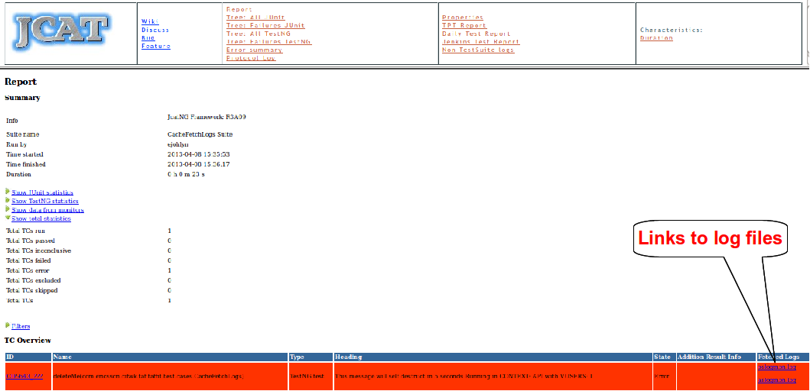

How does it work
As part of it's monitoring feature, TAF gathers information from relevant log files during a test run.
This is done by reading the contents of the log file on the system under test (see pages on OsLogMonitor and AsLogMonitor for more details on this) and translating each line into a log entry.
This log entry object is then stored in a cache where it can be retrieved later. It is now possible, when a failure occurs, to retrieve this information from the cache and recreate the log file using TAF functionality.
Links to the recreated log filescan be added to the HTML test report as shown below.

What are the default settings
The default settings for this feature in TAF are as follows:-
#FailLogger faillogger.onfail.gatherall=true faillogger.onfail.clearcache=false
faillogger.onfail.gatheral:
This setting specifies whether or not you want to create the log files and and add the links to the HTML report when a failure occurs.
faillogger.onfail.clearcache:
With this option it is possible to clear the cache when a fail occurs, this may be useful when there are more than one failure so that there is no duplication in the created log files
What do I need to to do enable this feature
To use this feature you will need to be using the latest version of TAF (more specifically the latest TafRun.groovy).
The default behaviour can be overridden by specifying your preferences for the properties above in a properties file in the "taf_properties" folder in your TAF project.
{kind=link}